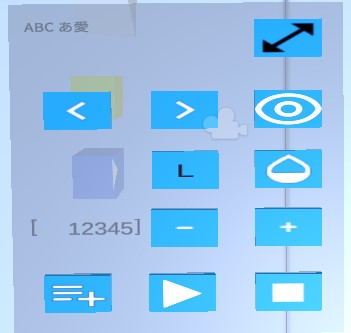
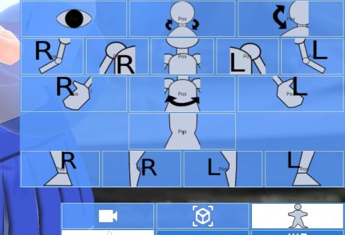
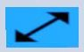

18.2. How to operate on VR/AR
In addition to controllers for VR devices, Meta Quest 3 fully supports hand tracking.
However, what you can do by default with controllers and hand tracking is different.
From ver 2.8.0, mobile terminals are now compatible with VR/AR.
18.2.1. Basic operations
VR/AR operation on mobile terminal
VR and AR can be displayed on mobile devices such as smartphones, but unlike VR devices, there is no controller. Therefore, please note that the following operations have a completely different feel.
- grab:
Grab an object and move it. You can move and rotate it like a real thing.
- When controlling a VR device:
trigger and grip
- During hand tracking:
Pinch the object you want to manipulate with your thumb and index finger
Caution
In the case of Meta Quest 3’s hand tracking, if you turn your palm towards yourself, a systematic operation may be activated. Try to do this with your palm facing the object as much as possible.
- Mobile device:
Tap to grab it and move your finger up, down, left and right on the screen. However, rotation is not possible.
Here’s what you can grab and move:
IK markers for each part of VRM
OtherObject (3D model of) itself
IK markers for OtherObject, Camera, Light, Effect, Image
IK marker for Directional Light
- Main camera movement:
Move the main camera, which is the viewpoint of the VR/AR space. The height and position of the viewpoint may differ slightly from the main camera on the normal screen.
- When controlling a VR device:
- Moving forward, backward, left and right:
left stick
- Move up and down:
Move the right stick forward/backward
- During hand tracking:
right hand virtual controller
Set the operation target to
main cameraand the operation mode tomove.- Mobile device:
right hand virtual controller
Set the operation target to
main cameraand the operation mode tomove.
- Main camera rotation:
Rotate the main camera, which is the viewpoint of the VR/AR space.
- When controlling a VR device:
- turn left:
Move the right stick to the left
- turn right:
Move the right stick to the right
When using a VR device controller, rotations other than those listed above are not possible as it may cause confusion.
- During hand tracking:
right hand virtual controller
Set the operation target to
main cameraand the operation mode torotation.- Mobile device:
right hand virtual controller
Set the operation target to
main cameraand the operation mode torotation.
Note
To grab and move the entire VRM, turn on
Move Modefrom theIK, Whole Bodyproperty. You can then grab and move it like any other IK marker. It can also be operated using the virtual controller described later.All IK markers are displayed simultaneously in VR/AR space.
Due to VR/AR specifications, IK markers are not displayed transparently and are hidden behind objects.
18.2.2. virtual controller
Since there are many things that cannot be done with just basic operations, we have prepared a virtual controller that can perform specific functions in VR/AR space.
These are displayed diagonally below the virtual hand. It can be used both when using a VR device controller and when tracking hands.
From ver 2.8.0, we have introduced an equivalent operation panel on mobile devices.
About the functions of each button
Buttons with the same icon can have the same functions in both VR and mobile devices. (Placement may vary slightly)
18.2.2.1. Virtual controller (VR)
It will be displayed on the left and right hand like the actual controller.
By default it is hidden to avoid distractions.
During hand tracking, all fingertips are used as collision detection, and if you overlap your fingertips with the button, the button will sink. For VR device controllers, only the index finger is used when triggering.
- yellow cube
When you touch it with the fingertips of your virtual hand, a virtual controller will appear. Only VR devices are displayed.
- blue cube
Touch it with the fingertip of your virtual hand to play or pause the animation. Only VR devices are displayed.
virtual hand When using a VR device controller
During hand tracking
Left hand
Right hand



18.2.2.2. Virtual controller (mobile)
It is displayed as a menu panel at the bottom left, bottom right, and top right of the screen.
The width and height are different in portrait and landscape, but they are almost the same. Depending on the operation mode, icons are added to X/Y/Z. (These icons are easy to associate with actual movements.)
- Footer
It’s an invisible button at the bottom of the screen. Since you will be using your mobile device’s screen recording and screenshot functions, nothing will actually be displayed in the red frame.
The following functions are available from left to right:
Show/hide left virtual controller
Animation play/pause
Show/hide virtual controller on the right


- To select a VRM bone
Switch the operation target to each bone. Tap the button of the bone you want to operate.
See About VRM IK markers for icons and their meanings.

It appears when you tap the following button on the right virtual controller:
When the operation target is VRM, tap the following button to display this button:

18.2.2.3. left hand virtual controller
UI |
Description |
|---|---|
Object name |
Touch it with the fingertip of your virtual hand to play or pause the animation. |
|
Select the previous 3D object. If there is a 2D object in the middle, it will be skipped. |
Select the next 3D object. If there is a 2D object in the middle, it will be skipped. |
|
Switch the display of IK markers. You can grab and operate it even when the display is off. It is not linked to the ON/OFF of the IK marker on the normal screen. |
|
Numbers displayed to the left of the center row |
The currently selected keyframe number. |
|
Return to the previous keyframe. This is almost the same as keyframe operations in the timeline panel. |
|
Return to next keyframe. This is almost the same as keyframe operations in the timeline panel. |
Registers the pose of the currently selected 3D object to the currently selected keyframe. Selected here is only valid in VR/AR space. This is different from the selection on the normal screen. |
|
Play the animation. |
|
Stop the animation. |
|
 |
Exit the VR/AR screen. (VR devices only) |
|
(OtherObject only) Set the shader of all materials of the object to Cutout to make them transparent. See below for details. (texture Cutout ) |
|
Switches the axis reference of the operating mode to G - |


18.2.2.4. right hand virtual controller
UI |
Description |
|---|---|
|
Operate based on the X axis. |
|
Operate based on the Y axis. |
Operate based on the Z axis. |
|
Set the operation target to |
|
Sets the operation target to the |
|
|
Set the operation target to |
|
Set the operation mode to |
|
Set the operation mode to |
|
Set the operation mode to |
Resets the position of the currently selected object. |
|
Resets the rotation of the currently selected object. |
|
Resets the size of the currently selected object. |
Note
For operations other than those listed above, return to the normal screen.
18.2.3. Summary of operations
Meta Quest 3 |
PICO4 |
Mobile device |
||
|---|---|---|---|---|
functions |
Controller |
hand tracking |
Controller |
|
grab |
trigger or grip |
index finger + thumb |
trigger or grip |
tap the screen |
Move main camera |
Left stick + right stick front and back |
right hand virtual controller |
Left stick + right stick front and back |
right hand virtual controller |
Rotate main camera |
right stick left and right |
right hand virtual controller |
right stick left and right |
right hand virtual controller |
Moving/rotating VRM |
virtual controller |
virtual controller |
virtual controller |
right hand virtual controller |
IK markers for each part of VRM |
grab |
grab |
grab |
right hand virtual controller |
Moving/rotating other than VRM |
grab |
grab |
grab |
Grasp or right hand virtual controller |
If there is a misalignment between the main camera of this app and the camera (viewpoint) of the VR device, please operate each VR device to return the viewpoint to the center.
Warning
In the PICO4 browser app, controllers B and Y seem to have the function assigned to the browser’s back button. Therefore, if you press it by mistake, carefully read the confirmation message before proceeding.
18.2.4. Convenient operation functions
18.2.4.1. V-pad in VR/AR environment
In VR equipment, the controller is equivalent to the mouse. However, unlike a mouse, it is not suitable for detailed work. This app provides a function called V-pad so that you can operate it to some extent even in environments where you cannot use a mouse.
You can also use it on VR devices to operate the regular screen.

This V-pad allows you to move and rotate the main camera by swiping inside each square. The operating feel of VR devices varies slightly depending on the product.
- Meta Quest 3
You can operate by holding down the trigger and moving the controller inside the square inside the V-pad.
You can rotate the main camera by holding the triggers on both controllers and focusing on the WebGL screen.
- PICO4
You can operate by holding down the trigger and moving the controller inside the square inside the V-pad.
You can operate it by simply moving the stick within the squares on the V-pad. This is the
most recommendedmethod of operation.
Hint
The reaction rate may be too fast. In that case, please adjust the movement speed and rotation speed of the V-pad from Application in the settings.
18.2.4.2. Object transformation
Use the virtual controller on your right hand to move, rotate, and resize the selected object.
You can move and rotate by grabbing directly with the VR device’s controller or hand tracking, but if you want to make fine adjustments, it’s better to use a virtual controller.
Hint
For any of the operations below, please adjust the VR/AR movement speed and rotation speed in the
Applicationstab of the settings.The reference is the local axis.
- Positioning mode
Press
 to switch to move mode.
to switch to move mode.Press one of the following to move along that axis.


- Rotation mode
Press
 to switch to rotation mode.
to switch to rotation mode.Press the button shown above to rotate.
- resize mode
Press
 to switch to resize mode.
to switch to resize mode.Press the button shown above to change the size.
- Reset changes
Please press one of the buttons below.
Resets the position of the currently selected object.
Resets the rotation of the currently selected object.
Resets the size of the currently selected object.